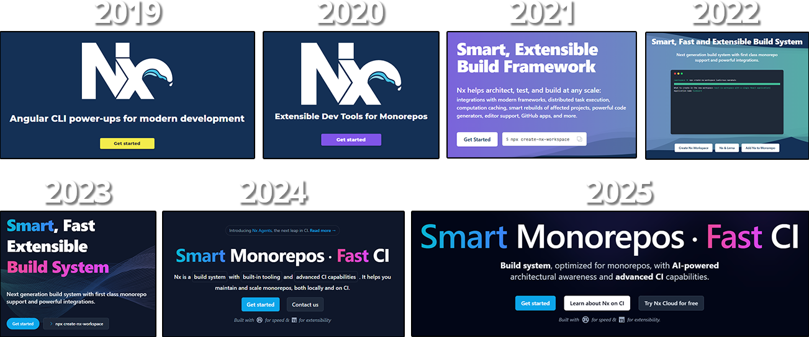
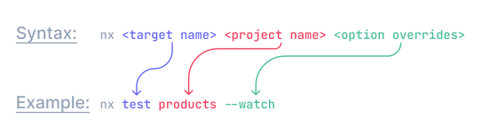
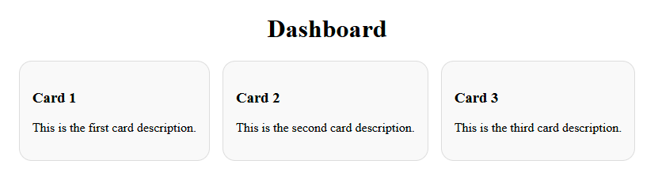
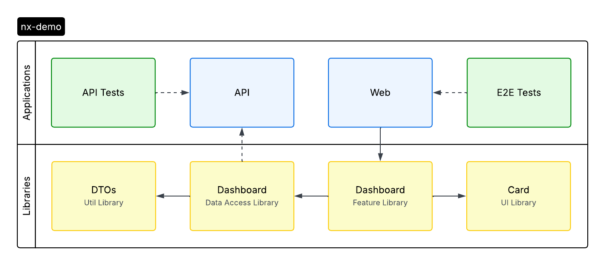

Nx Workshop
Jason Neal
Wait!
What does this have to do with Nx?
- Quarrying Process
- Rough Shaping and Cutting
- Transportation
- Stone Cutting and Fitting
- Installation and Finishing
What is Nx?
A lot of things...
Nx History
The many facets of Nx
- Nx CLI - CLI tool for interacting with Nx
- Nx Console - UI tool for interacting with Nx
- Nx Workspaces - a repo that uses Nx
- Nx Plugins - community extensions
- Nx Devkit - Utilities for building plugins
- Nx Cache - Local Caching
- Nx Replay - Remote Caching
- Nx Cloud - Enhance CI/CD workflows
- Nx Agents - Distributed Task Execution
- Nx Atomizer - Automatically Split E2E Tasks
- Nx Release - Release Management
- Nx Affected - Run tasks on affected projects
- Nx Enterprise - faster CI, enterprise features
- Nx Powerpack - suite of paid extensions

How Does Nx Help You?
- speed up your existing project's builds and tests, locally and on CI (whether that's a monorepo or standalone application)
- quickly scaffold a new project (using Nx plugins) without having to configure any lower-level build tools
- easily integrate new tooling (e.g., Storybook, Tailwind etc), into your project.
- ensure consistency and code quality with custom generators and lint rules
- update your frameworks and tools and keep your workspace evergreen using the automated code migration feature
Run Tasks
- easily run multiple targets for multiple projects in parallel
- define task pipelines to run tasks in the correct order
- only run tasks for projects affected by a given change
- speed up task execution with caching
Defining Tasks
package.json
{
"name": "mylib",
"scripts": {
"build": "tsc -p tsconfig.lib.json",
"test": "jest"
}
}
project.json
{
"root": "libs/mylib",
"targets": {
"build": {
"command": "tsc -p tsconfig.lib.json"
},
"test": {
"executor": "@nx/jest:jest",
"options": {
/* ... */
}
}
}
}
Inferred by Nx Plugins
{
...
"plugins": [
{
"plugin": "@nx/vite/plugin",
"options": {
"buildTargetName": "build",
"testTargetName": "test",
"serveTargetName": "serve",
"previewTargetName": "preview",
"serveStaticTargetName": "serve-static"
}
},
{
"plugin": "@nx/eslint/plugin",
"options": {
"targetName": "lint"
}
},
{
"plugin": "@nx/jest/plugin",
"options": {
"targetName": "test"
}
}
],
...
}
Nx uses the following syntax:
Run a Single Task
To run the test task for the header project run this command:
$ npx nx test header
Run Tasks for Multiple Projects
You can use the run-many command to run a task for multiple projects.
$ # Run the build task for all projects in the repo:
$ npx nx run-many -t build
$ # Run the build, lint and test task for all projects in the repo:
$ npx nx run-many -t build lint test
$ # Run the build, lint, and test tasks only on the header and footer projects:
$ npx nx run-many -t build lint test -p header footer
Run Tasks on Projects Affected by a PR
You can also run a command for all the projects affected by your PR like this:
$ npx nx affected -t test
Explore your Workspace
Nx understands your workspace as a collection of projects.
The projects in the workspace have dependencies between them and form a graph known as the Project Graph.
Explore the Project Graph
Exploring this graph visually is vital to understanding how your code is structured and how Nx behaves. It always stays up to date without having to actively maintain a document as it is calculated by analyzing your source code.
Launching the Project Graph
To launch the project graph visualization for your workspace, use Nx Console or run:
$ npx nx graph
Project Dependency Rules
In order to maintain a certain sense of order, we recommend having a small number of types:
- Feature libraries
- UI libraries
- Data-access libraries
- Utility libraries
Feature Libraries
A feature library contains a set of files that configure a business use case or a page in an application. Most of the components in such a library are container components that interact with data sources. This type of library also contains most UI logic, form validation code, etc.
Naming Convention
feature (if nested) or feature-* (e.g., feature-home).
Dependency Constraints
A feature library can depend on any type of library.
UI Libraries
A UI library is a collection of related presentational components. There are generally no services injected into these components (all of the data they need should come from Inputs).
Naming Convention
ui (if nested) or ui-* (e.g., ui-buttons)
Dependency Constraints
A feature library can depend on any type of library.
Data-access Libraries
Data-access libraries contain code that function as client-side delegate layers to server tier APIs.
All files related to state management also reside in a data-access folder (by convention,
they can be grouped under a +state folder under src/lib).
Naming Convention
data-access (if nested) or data-access-* (e.g. data-access-seatmap)
Dependency Constraints
A data-access library can depend on data-access and util libraries.
Utility Libraries
A utility library contains low level code used by many libraries. Often there is no framework-specific code and the library is simply a collection of utilities or pure functions.
Naming Convention
util (if nested), or util-* (e.g., util-testing)
Dependency Constraints
A utility library can depend only on utility libraries.
Enforce Project Dependency Rules
In order to enforce the dependency constraints that were listed for each type, you can add the following
rule in the root .eslintrc.json file:
{
"root": true,
"ignorePatterns": ["**/*"],
"plugins": ["@nx"],
"overrides": [
{
"files": ["*.ts", "*.tsx", "*.js", "*.jsx"],
"rules": {
"@nx/enforce-module-boundaries": [
"error",
{
"allow": [],
"depConstraints": [
{
"sourceTag": "type:feature",
"onlyDependOnLibsWithTags": ["type:feature", "type:ui", "type:data-access", "type:util"]
},
{
"sourceTag": "type:ui",
"onlyDependOnLibsWithTags": ["type:ui", "type:util"]
},
{
"sourceTag": "type:data-access",
"onlyDependOnLibsWithTags": ["type:data-access", "type:util"]
},
{
"sourceTag": "type:util",
"onlyDependOnLibsWithTags": ["type:util"]
}
]
}
]
}
}
]
}
Enhance Your LLM
Monorepos provide an ideal foundation for AI-powered development, enabling cross-project reasoning and code generation. However, without proper context, LLMs struggle to understand your workspace architecture, seeing only individual files rather than the complete picture.
Nx's transforms your AI assistant by providing rich workspace metadata that enables it to:
- Understand your workspace architecture and project relationships
- Identify project owners and team responsibilities
- Access Nx documentation for accurate guidance
- Leverage code generators for consistent scaffoldin
- Connect to your CI pipeline to help fix failures
How Nx MCP Enhances Your LLM
Nx implements an MCP server that exposes workspace metadata to compatible AI assistants like GitHub Copilot, Claude, and others.
These are some of the available tools which the Nx MCP server exposes:
-
nx_workspace: Provides a comprehensive view of your Nx configuration and project graph -
nx_project_details: Returns detailed configuration for specific projects nx_docs: Retrieves relevant documentation based on queriesnx_generators: Lists available code generators in your workspace-
nx_generator_schema: Provides detailed schema information for generators -
nx_visualize_graph: Opens interactive project or task graph visualizations -
nx_cloud_cipe_details: Returns information about CI pipelines from Nx Cloud -
nx_cloud_fix_cipe_failure: Provides detailed information about CI failures to help fix issues
Workshop
Prerequisites:
App Design
App Architecture
Create Nx Workspace
npx --yes create-nx-workspace@latest
NX Let's create a new workspace [https://nx.dev/getting-started/intro]
✔ Where would you like to create your workspace? · nx-demo
✔ Which stack do you want to use? · angular
✔ Integrated monorepo, or standalone project? · integrated
✔ Application name · web
✔ Which bundler would you like to use? · esbuild
✔ Default stylesheet format · scss
✔ Do you want to enable Server-Side Rendering (SSR) and Static Site Generation (SSG/Prerendering)? · No
✔ Which unit test runner would you like to use? · jest
✔ Test runner to use for end to end (E2E) tests · playwright
✔ Which CI provider would you like to use? · skip
✔ Would you like remote caching to make your build faster? · skip
NX Creating your v21.1.2 workspace.
✔ Installing dependencies with npm
✔ Successfully created the workspace: nx-demo.
NX Welcome to the Nx community! 👋
🌟 Star Nx on GitHub: https://github.com/nrwl/nx
📢 Stay up to date on X: https://x.com/nxdevtools
💬 Discuss Nx on Discord: https://go.nx.dev/community
Run a few commands
cd nx-demo
# Install the Nx Nest Plugin
npx nx add @nx/nest
# Open VSCode
code .
eslint.config.mjs
...
depConstraints: [
{
sourceTag: 'type:feature',
onlyDependOnLibsWithTags: ['type:*'],
},
{
sourceTag: 'type:data-access',
onlyDependOnLibsWithTags: ['type:data-access', 'type:util'],
},
{
sourceTag: 'type:ui',
onlyDependOnLibsWithTags: ['type:ui', 'type:util'],
},
{
sourceTag: 'type:util',
onlyDependOnLibsWithTags: ['type:util'],
},
],
...
apps/web/project.json
{
"name": "web",
"$schema": "../../node_modules/nx/schemas/project-schema.json",
"projectType": "application",
"prefix": "app",
"sourceRoot": "apps/web/src",
"tags": ["type:feature"],
...
}
apps/web/src/app/app.config.ts
import { provideHttpClient } from '@angular/common/http';
import { ApplicationConfig, provideZoneChangeDetection } from '@angular/core';
import { provideRouter } from '@angular/router';
import { appRoutes } from './app.routes';
export const appConfig: ApplicationConfig = {
providers: [
provideZoneChangeDetection({ eventCoalescing: true }),
provideRouter(appRoutes),
provideHttpClient(),
],
};
Generate API Application
npx nx generate @nx/nest:application \
--directory=apps/api \
--frontendProject=web \
--linter=eslint \
--name=api \
--tags=type:feature \
--unitTestRunner=jest \
--no-interactive
Generate DTOs Library
npx nx generate @nx/js:library \
--directory=libs/util-dtos \
--bundler=none \
--linter=eslint \
--name=util-dtos \
--unitTestRunner=jest \
--tags=type:util \
--no-interactive
Generate Dashboard Library
npx nx generate @nx/angular:library \
--directory=libs/feature-dashboard \
--name=feature-dashboard \
--flat=true \
--inlineStyle=true \
--inlineTemplate=true \
--style=scss \
--tags=type:feature \
--no-interactive
Generate Card Library
npx nx generate @nx/angular:library \
--directory=libs/ui-card \
--name=ui-card \
--flat=true \
--inlineStyle=true \
--inlineTemplate=true \
--style=scss \
--tags=type:ui \
--no-interactive
Generate Data Access Library
npx nx generate @nx/angular:library \
--directory=libs/data-access-dashboard \
--name=data-access-dashboard \
--flat=true \
--inlineStyle=true \
--inlineTemplate=true \
--style=scss \
--tags=type:data-access \
--no-interactive
Try out run-many
npx nx run-many -t build lint test
✔ nx run web:test
✔ nx run web:build:production
✔ nx run api:build
✔ nx run api:lint
✔ nx run web:lint
✔ nx run ui-card:test
✔ nx run api-e2e:lint
✔ nx run util-dtos:lint
✔ nx run feature-dashboard:lint
✔ nx run data-access-dashboard:lint
✔ nx run data-access-dashboard:test
✔ nx run feature-dashboard:test
✔ nx run util-dtos:test
✔ nx run ui-card:lint
✔ nx run web-e2e:lint
————————————————————————————————————————————————————————————————
NX Successfully ran targets build, lint, test for 8 projects (14s)
Try run-many again
npx nx run-many -t build lint test
✔ nx run web:build:production
✔ nx run web:test
✔ nx run api:build
✔ nx run api:lint
✔ nx run web:lint
✔ nx run data-access-dashboard:test
✔ nx run ui-card:test
✔ nx run feature-dashboard:test
✔ nx run util-dtos:test
✔ nx run data-access-dashboard:lint
✔ nx run feature-dashboard:lint
✔ nx run ui-card:lint
✔ nx run api-e2e:lint
✔ nx run util-dtos:lint
✔ nx run web-e2e:lint
————————————————————————————————————————————————————————————————
NX Successfully ran targets build, lint, test for 8 projects (275ms)
Nx read the output from the cache instead of running the command for 15 out of 15 tasks.
apps/web/src/app/app.component.html
apps/web/src/app/app.routes.ts
import { Route } from '@angular/router';
export const appRoutes: Route[] = [
{
loadComponent: () =>
import('@nx-demo/feature-dashboard').then(
(m) => m.FeatureDashboardComponent
),
path: '',
},
];
libs/util-dtos/src/lib/util-dtos.ts
import { UiCardComponent } from '@nx-demo/ui-card';
export function utilDtos(): string {
return 'util-dtos';
}
libs/util-dtos/src/lib/util-dtos.ts
export interface CardDto {
description: string;
title: string;
}
apps/api/src/app/app.controller.ts
import { Controller, Get } from '@nestjs/common';
import { AppService } from './app.service';
@Controller()
export class AppController {
constructor(private readonly appService: AppService) {}
@Get('dashboard')
getData() {
return this.appService.getData();
}
}
apps/api/src/app/app.service.ts
import { Injectable } from '@nestjs/common';
import { CardDto } from '@nx-demo/util-dtos';
@Injectable()
export class AppService {
getData(): CardDto[] {
return [
{
title: 'Card 1',
description: 'This is the first card description.',
},
{
title: 'Card 2',
description: 'This is the second card description.',
},
{
title: 'Card 3',
description: 'This is the third card description.',
},
];
}
}
libs/data-access-dashboard/src/lib/dashboard.service.ts
You will need to rename the component file.
import { HttpClient } from '@angular/common/http';
import { inject, Injectable } from '@angular/core';
import { CardDto } from '@nx-demo/util-dtos';
import { Observable } from 'rxjs';
@Injectable({
providedIn: 'root',
})
export class DashboardService {
private readonly http = inject(HttpClient);
public getDashboardData(): Observable<CardDto[]> {
return this.http.get<CardDto[]>('/api/dashboard');
}
}
libs/ui-card/src/lib/ui-card.component.ts
import { CommonModule } from '@angular/common';
import { Component, input } from '@angular/core';
@Component({
selector: 'lib-ui-card',
imports: [CommonModule],
styles: `
.card {
background-color: #f9f9f9;
border: 1px solid #ddd;
border-radius: 1rem;
padding: 1rem;
}
`,
template: `
<article class="card">
<h3>{{ title() }}</h3>
<p>{{ description() }}</p>
</article>
`,
})
export class UiCardComponent {
public description = input.required<string>();
public title = input.required<string>();
}
libs/feature-dashboard/src/lib/feature-dashboard.component.ts
import { CommonModule } from '@angular/common';
import { Component, inject } from '@angular/core';
import { DashboardService } from '@nx-demo/data-access-dashboard';
import { UiCardComponent } from '@nx-demo/ui-card';
@Component({
selector: 'lib-feature-dashboard',
imports: [CommonModule, UiCardComponent],
styles: `
h1 {
text-align: center;
}
section {
display: flex;
gap: 1rem;
justify-content: center;
}
`,
template: `
<h1>Dashboard</h1>
<section>
@if (cards$ | async; as cards) {
@for (card of cards; track $index) {
<lib-ui-card
[description]="card.description"
[title]="card.title"
></lib-ui-card>
}
} @else {
<p>Loading...</p>
}
</section>
`,
})
export class FeatureDashboardComponent {
private readonly service = inject(DashboardService);
public cards$ = this.service.getDashboardData();
}